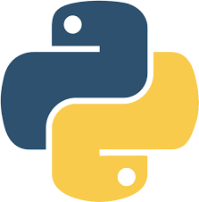

Python is an interpreted high-level general-purpose programming language. Its design philosophy emphasizes code readability with its use of significant indentation. Its language constructs as well as its object-oriented approach aim to help programmers
write clear, logical code for small and large-scale projects.

Animation is a method in which figures are manipulated to appear as moving images. In traditional animation, images are drawn or painted by hand on transparent celluloid sheets to be photographed and exhibited on film. Today, most animations are made
with computer-generated imagery (CGI).